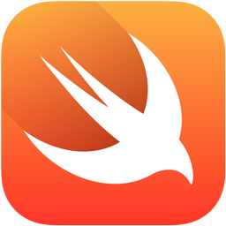

Swift:

Criada pela Apple em 2014 é uma linguagem compilada e segura e até mesmo de alto nível, podendo ser capaz de criar aplicativos para Iphone ou Ipad, aplicativos para Mac, aplicativos para Apple watch e AppleTV e entre
outros dispositivos Apple e até backend e servidores e até prototipagem rápida, além de ser usado em empresas que desenvolvem app's apple, startups de aplicativos móveis, desenvolvimento de software educacional com swift
playgrounds e backend com Vapor ou Kitura.